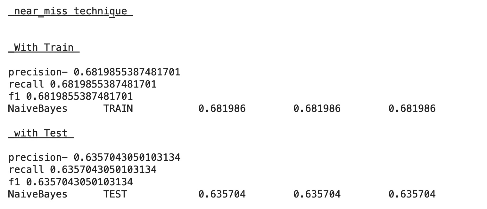

Published 14 November 2022
üëã Hi!! Naive Bayes Classifications is a Supervised machine learning algorithm used for classification.It consist of two words Naive and Bayes. So let‚Äôs first discuss the Bayes Theorem.
What is Bayes Theorem?Bayes theorem works on conditional probability. Conditional probability is the probability that something will happen, given that something else has already occurred. Using the conditional probability, we can calculate the probability of an event using its prior knowledge. It is stated mathematically as the following equation, DataSet from Kaggle
where,
– A and B are events and P(B)!=0
– P(A | B) is a conditional probability that defines the likelihood of event A occurring given that B is true, also – known as posterior probability,
– P(B | A) is a conditional probability that defines the likelihood of event B occurring given that A is true, also known as the likelihood
– P(A) and P(B) are the probabilities of observing A and B independently of each other, also known as prior probability
-------------------------------------------------------------------------------------------------
Why Naive Bayes is so ‘Naive’ ?-->The Naive Bayes Classifier assumes that a particular feature in a class is independent of other features due to which it gets its name to be “Naive”.
The presence or absence of a feature does not affect other features in the data.
-------------------------------------------------------------------------------------------------
Step-wise Python implementation of Naive Bayes Classifier algorithm.The first step in our algorithm is to load the dataset. We load the Ford Sentence classification dataset in a panda dataframe. The algorithm and all the helper functions are implemented under class FordSentenceClassifier()
After that we perform pre-processing to clean up strings by removing punctuations, tokenizing sentences into words and a step to count the frequence of words which appear in each sentence.
1. Understanding the algorithm
We need three things: the probability that a sentence belongs to a particular class (log priors), a vacublary of words, and word frequency for each class/label (number of times a given word appears in sentence of particular class/label) We compute the log class priors by counting how many sentences are in our dataset for each class and dividing by the total number. Finally we use the math library to take the log
def tokenize(self, text):
text = self.clean(text).lower()
return re.split("\W+", text)
def get_word_counts(self, words):
word_counts = {}
for word in words:
word_counts[word] = word_counts.get(word, 0.0) + 1.0
return word_counts
2. High level implementation - training, accuracy and predictions
After extracting all the above data, we write another fucntion (predict) to out the class label for new data. We apply Naive Base directly here. For example, given a sentence, we need to iterate each word and compute the log of how many times we have seen a word belong to each class divided by total count of all words in that class. We calculate this for each class and sum them all up. Then we add the log class priors to check which score is bigger for that sentence. The largest score will be the predicted class.
Dealing with Imbalanced Data Analysis of imbalanced datasets leads to less accurate predictions unless the datasets are properly balanced after pre-processing
OverSampling Technique Oversampling is appropriate when data scientists do not have enough information. One class is abundant, or the majority, and the other is rare, or the minority
UnderSampling Technique Undersampling is appropriate when there is plenty of data for an accurate analysis. Typically, scientists randomly delete events in the majority classExternal link:open_in_new to end up with the same number of events as the minority class.
SMOTE Technique SMOTE is an oversampling technique where the synthetic samples are generated for the minority class. This algorithm helps to overcome the overfitting problem posed by random oversampling. It focuses on the feature space to generate new instances with the help of interpolation between the positive instances that lie together.
Near Miss Technique It can be grouped under undersampling algorithms and is an efficient way to balance the data. The algorithm does this by looking at the class distribution and randomly eliminating samples from the larger class. When two points belonging to different classes are very close to each other in the distribution, this algorithm eliminates the datapoint of the larger class thereby trying to balance the distribution. 
Conclusions SMOTE is also supposed to produce good results. Just make sure that you are not applying SMOTE before using cross-validation (or partitioning your data into train and validation sets). If you do that, there is a high possibility of overfitting because you are introducing duplicates (or synthetic samples) to the validation data set as well which is absolutely not recommended.
3. Laplace smoothing effect
Something to note, log of 0 is undefined! We can encounter a word that is in the vocublary of a certain category but might not be in another class's vocublary. One way around this is to use Laplace smoothing. We simply add 1 to the numerator, but we also add size of the vocublary of the denomniator to balance it
log_w_given = math.log( (self.word_counts[label].get(word, 0.0) + 1 if smoothing else 0) / (self.num_messages[label] + len(self.vocab) if smoothing else 0))
4. Calculating probability
We can calulate probability of occurence of a word by dividing the num of sentences containing ‘the’ and total sentences. We can calulate conditional probability of a word by dividing the num of sentences for particular class containing ‘the’ and number of sentences which belong to that class
def p(self, word, X):
n = len(X)
count = 0
for label in self.labels:
count += self.word_counts[label][word]
return count/n
def conditional_p(self, word):
conditional_p = {}
for label in self.labels:
n = self.word_counts[label][word]
total = self.num_messages[label]
conditional_p[label] = n/total
return conditional_p
5. Top 5 words for each class
Since we already have the count of words for each label, we can use Counter operator to find the top 5 words that belong to each class
def top(self, n):
top_words = {}
for label in self.labels:
top_words[label] = dict(Counter(self.word_counts[label]).most_common(5))
return top_words

Sakshi
Learning never Stops